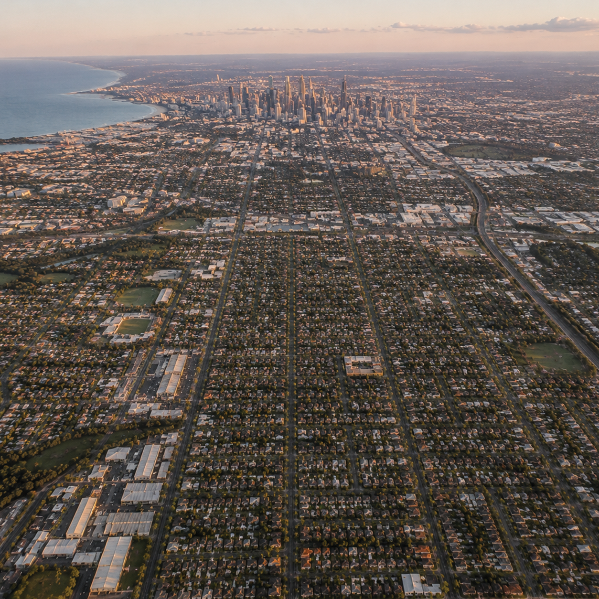

+6
From a higher altitude, the country appears as a network of cities connected by highways, power lines, and communication infrastructure, rather than empty land between settlements as it might have felt in 1977. One of the most visible changes is coastal urbanisation—large portions of the coastline now built up with expanded residential developments, ports, and tourism infrastructure, concentrating population closer to the edges of the continent. Compared to 1977, there is also far greater environmental awareness: satellite monitoring is used to track droughts, bushfires, and climate patterns in real time, and large parts of the landscape are now understood through data as much as through physical observation. The country is no longer just a physical landmass, but a complex system of interconnected urban centres, infrastructure, and environmental monitoring that shapes how people live and interact with the land.